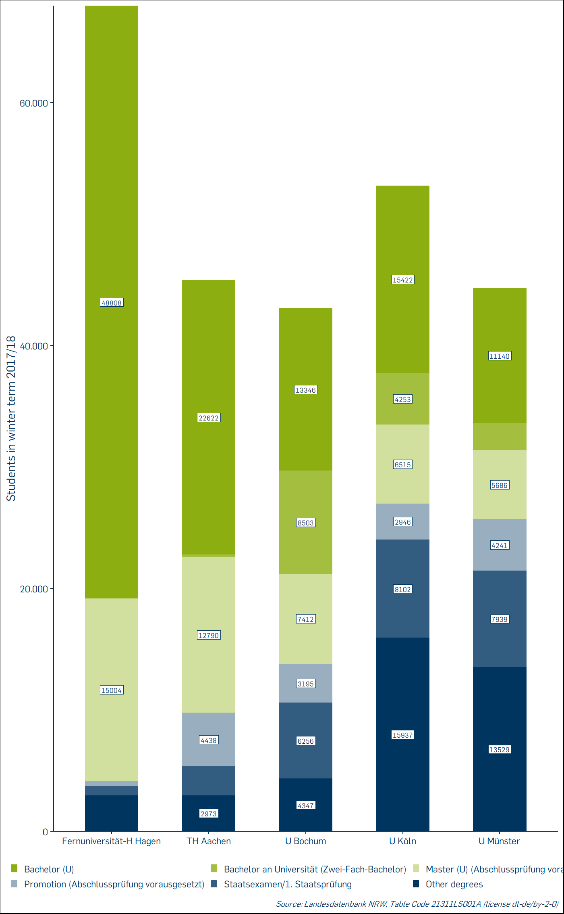
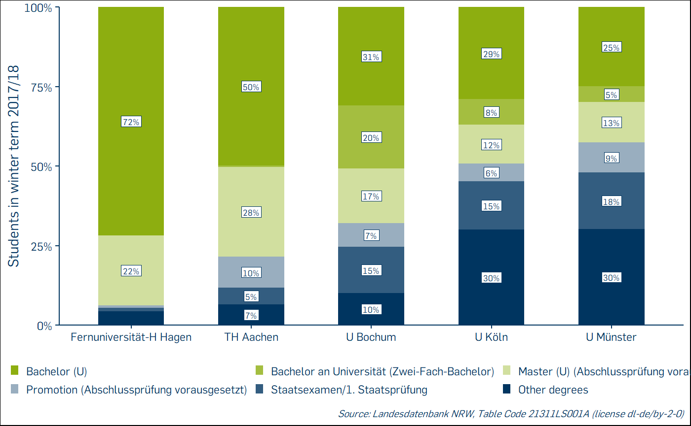
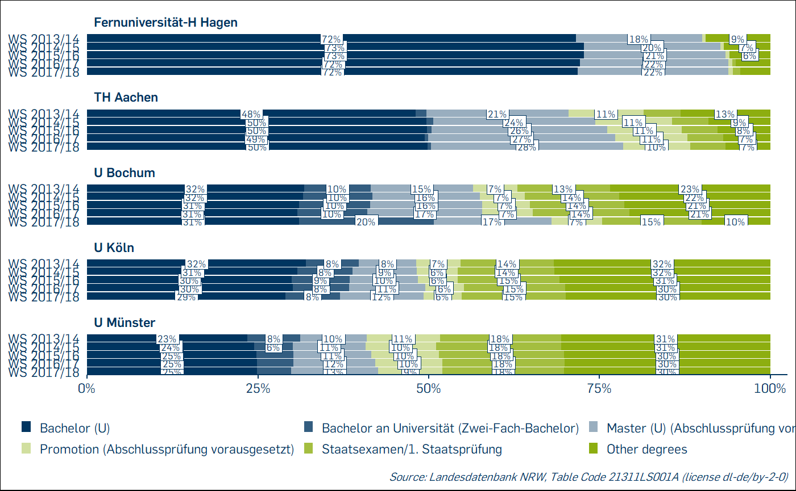

This vignette will explain step-by-step how to retrieve entire table series and their associated labels from Destatis using the package wiesbaden. My aim with the approach described here is to make it easily adaptable to other use cases or table series. Feedback welcome!
First off, load the packages we will be using throughout this vignette.
library(dplyr)
library(extrafont)
library(forcats)
library(janitor)
library(purrr)
library(RUBer)
library(tibble)
library(tidyselect)
library(wiesbaden)The R package wiesbaden by Moritz Marbach provides functions to directly retrieve data from databases maintained by the Federal Statistical Office of Germany (Destatis) in Wiesbaden. After installing the package with remotes::install_github("sumtxt/wiesbaden"), you can check vignette("using-wiesbaden", package = "wiesbaden") for more info.
In order to retrieve data from the four available databases (Bildungsmonitoring, Genesis, Landesdatenbank NRW, Regionalstatistik), you need to register on the respective website. For this vignette, we use the Landesdatenbank NRW database, so please register an account there. Once you have registered, use wiesbaden::save_credentials to save your login information and wiesbaden::test_login to test the connection. If you cannot establish a valid connection, you will not be able to execute all subsequent code chunks!
In this vignette, we are interested in tables with data on universities. On the Landesdatenbank NRW website, the code for tables on universities is “213”. So let us retrieve all table names with code “213”:
# Retrieve all tables with code "213"
df_table <- wiesbaden::retrieve_datalist(
tableseries= "213",
genesis = c(db = "nrw")
)
df_table %>% dplyr::arrange(desc(description)) %>% tibble::as_tibble()
writeLines(df_table$description)Looking at the retrieved data frame, a problem becomes apparent: the function not only returns tables that start with code “213” but all tables with the fragment “213” anywhere in their code. In addition to tables on universities, this returns tables on wastewater sewage, among other things. So let us filter the data frame to all table names whose code starts with “213”:
# Filtering the tables to codes starting with "213".
df_table_filtered <- df_table %>%
dplyr::filter(
stringr::str_starts(
tablename,
"213"
)
)This looks much better, we now have a data frame with the names and descriptions of 37 tables with data on universities in NRW. In the next step, we are going to create a named vector of these table names using purrr::set_names. We then download the data for all table names in this vector and put them in one big data frame using a combination of purrr::map_dfr and wiesbaden::retrieve_data. You will be downloading a lot of data, so this step may take a while!
# Get all table names and turn them into a named vector
table_names <- purrr::set_names(
x = as.character(
df_table_filtered[["tablename"]]
),
nm = as.character(
df_table_filtered[["tablename"]]
)
)
# Retrieve data for every table name and bind them into one data frame. Note
# that this may take a while!
df <- purrr::map_dfr(
table_names,
wiesbaden::retrieve_data,
genesis = c(db = "nrw"),
.id = "tablename"
)For each table, we now download the available metadata with wiesbaden::retrieve_metadata and put them into one data frame using purrr::map_dfr. The metadata describes the different variables used in each table. The metadata consists of four columns: tablename, (variable) name, (variable) description and (variable) unit. We then create a character vector of the unique variable names for all tables.
# Retrieve metadata for every table name and bind them into one data frame
df_metadata <- purrr::map_dfr(
table_names,
wiesbaden::retrieve_metadata,
genesis = c(db = "nrw"),
.id = "tablename"
)
# Create character vector of all unique variable names in all tables
variables_unique <- unique(
as.character(
df_metadata[["name"]]
)
)We now have a vector of 30 unique variables that are used in the table series “213”. The data tables use value keys and not the actual value labels (e.g. the variable “SX-A01” has the two value keys “SX-OPSCHUL1” and “SX-OPSCHUL2” with the labels “Öffentlich” (Public) and “Privat” (private) stored in separate key tables). We use a combination of purrr::map and wiesbaden::retrieve_valuelabel to retrieve all value labels for our data tables in a list. We then do some data cleaning using purrr::discard.
# Retrieve value labels with wiesbaden::retrieve_valuelabel
list_value_labels <- purrr::map(
variables_unique,
wiesbaden::retrieve_valuelabel,
genesis = c(db = "nrw")
)
# Variables with no labels return a list with the character "No results found."
# We use purrr::discard to drop all these empty list elements of type character.
list_value_labels_filtered <- list_value_labels %>%
purrr::discard(
~ is.character(.x)
)Unlike the downloaded data and metadata, which we have put into one data frame each, the value labels are put into a list of data frames. To retrieve a single element from that list, i.e. a single data frame of value labels, use double square brackets like this list_value_labels_filtered[[1]].
We now have all the data required and have done some minimal data cleaning and filtering. In this section, we clean the data some more and bring it all together in one data frame.
The Destatis data uses capitalized column names and column names containing hyphens. We automatically change this to snake case and replace special characters for all column names using janitor::clean_names. The data also includes three types of columns that do not seem to be documented and which serve no apparent purpose. Specifically, the undocumented columns ending in “qual” (the only value being “e”), “err” (always 0) and “lock” (always NA) are of no value to us, so we discard them from the data frame.
# Clean all column names (e.g. replacing hyphens with underscores) and make them
# use snake case.
# Discard columns ending in "qual", "err", or "lock".
df_cleaned <- df %>%
janitor::clean_names(
case = "snake"
) %>%
dplyr::select(
-ends_with(
c(
"qual",
"err",
"lock"
)
)
)We clean the list of value labels by turning all factors into character vectors using dplyr::mutate_all. Factors can be very useful, but I think it is easiest to use them selectively and only set them with a specific use case in mind. We then apply janitor::clean_names to the list of data frames containing value labels. As we have also applied this function to the data frame with the actual data, this makes the column names between the different tables consistent.
We want to combine all value labels with the data frame containing the actual data. Unfortunately, each data frame with value labels has a column “description”. We need to make this column unique across the list of data frames containing value labels, so that we know which value key the description applies to. First, we use purrr::map_chr to generate a character vector of the descriptions. This is then used as the input to another function, where we rename all the description columns to “description_” plus “key_id”.
# Turn factors into character vectors and clean all column names with janitor
list_value_labels_wrangled <- list_value_labels_filtered %>%
purrr::map(
dplyr::mutate_all,
as.character
) %>%
purrr::map(
janitor::clean_names,
case = "snake"
)
# Generate a character vector of unique description column names
description_names <- purrr::map_chr(
purrr::map(
list_value_labels_wrangled,
~ paste0(names(.x), "_description")
),
1
)
# Rename the existing description column names to make them unique
list_value_labels_unique <- purrr::map2(
list_value_labels_wrangled,
description_names,
~dplyr::rename(
.x,
!!.y := description
)
)We are now ready to combine the data with the corresponding labels. Before, though, we will retrieve another set of labels, describing the contents of each table. As with the value labels, we rename the generic “description” column to “tablename_description” to make it unique.
For combining tables that share a mutual key or mutal set of keys, we use dplyr::left_join. Because we have so many individual tables and keys, doing this manually would be tedious. To avoid this manual process, we use purrr::reduce on a list of all data frames we want to join. So before applying purrr::reduce, we put the data frame with the actual data, the data frame with the table descriptions, and the list of data frames containing value labels into one big list.
# Create data frame with table name and table description
df_table_descriptions <- df_table_filtered %>%
dplyr::mutate_all(
as.character
) %>%
dplyr::select(
tablename,
tablename_description = description
)
# Combine actual data with the data frame of table names and the list of data
# frames containing value labels into one list.
df_list_tmp <- append(
list(df_cleaned),
list(df_table_descriptions)
)
df_list <- append(
df_list_tmp,
list_value_labels_unique
)
# Join data with all the value label data frames to create one big data frame
df_joined <- purrr::reduce(
df_list,
dplyr::left_join
)We also sort the columns (not the rows!) alphabetically, so that the descriptions come immediately after the respective key column. The first two columns are always the table code and the table description. We also turn the data frame into a tibble, for better print defaults among other benefits.
# Order columns alphabetically, put columns tablename and tablename_description
# first, put value columns last, turn data frame into tibble.
db_nrw_213 <- df_joined %>%
dplyr::select(
sort(
tidyselect::peek_vars()
)
) %>%
dplyr::relocate(
tablename,
tablename_description,
!(ends_with("_val")),
ends_with("val")
) %>%
tibble::as_tibble()The resulting data frame, db_nrw_213, actually comes bundled with the RUBer package. We use usethis::use_data to handle this step for us. We have now added 37 tables of university related data to our package!
We usually do not want to work with the entire data frame at once. The RUBer package provides the function filter_destatis_code, which allows you to filter the data based on a table code. It also discards all columns that only consist of NA after filtering. As an example, let us create a data frame consisting of all data for table code “21311LS001A”.
load(
"D:\\Git\\db_nrw_213.rda"
)
# Get all rows and columns for table code 21311LS001A
df_21311LS001A <- filter_destatis_code(
df = db_nrw_213,
tablename = "21311LS001A"
)The table description says that this table contains “Studierende / Studenten, Land, Hochschulen, Studienfach, Fachsemester, Angestrebte Abschlussprüfung, Semester”. So essentially it is a table of students for each degree program, term, and university. We will do some basic analysis and plotting using this data.
First, let us find out which five universities had the highest overall number of students with the help of forcats::fct_lump_n.
# Create data frame with plotting data, filtering on the winter term 2017/18,
# focusing on the top five universities in terms of student count and keeping
# the top five degree types, in addition to a lumped category "other degrees".
df_plot <- df_21311LS001A %>%
dplyr::filter(
semest == "WS 2017/18"
) %>%
dplyr::mutate(
bilhs1_description = forcats::fct_lump_n(
bilhs1_description,
n = 5,
w = bil002_val,
other_level = "Other NRW universities"
)
) %>%
dplyr::filter(
bilhs1_description != "Other NRW universities"
) %>%
dplyr::mutate(
bilap1 = forcats::fct_lump_n(
bilap1,
n = 5,
w = bil002_val,
other_level = "Other degrees"
),
bilap1_description = forcats::fct_lump_n(
bilap1_description,
n = 5,
w = bil002_val,
other_level = "Other degrees"
)
)
rub_plot_type_1(
df = df_plot,
x_var = bilhs1_description,
y_var = bil002_val,
fill_var = bilap1_description,
y_axis_label = "Students in winter term 2017/18",
caption = "Landesdatenbank NRW, Table Code 21311LS001A (license dl-de/by-2-0)",
caption_prefix = "Source:",
filter_cutoff = 0.06
# ,fill_reverse = TRUE
)
The Fernuniversität Hagen, the TH Aachen, the University of Bochum, the University of Köln and the University of Münster had the highest student count in the winter term 2017/18. Maybe we are interested more specifically in the relative importance of each degree type at each university. We can use rub_plot_type_2 for that:
rub_plot_type_2(
df = df_plot,
x_var = bilhs1_description,
y_var = bil002_val,
y_axis_label = "Students in winter term 2017/18",
fill_var = bilap1_description,
caption = "Landesdatenbank NRW, Table Code 21311LS001A (license dl-de/by-2-0)",
caption_prefix = "Source:",
filter_cutoff = 0.05
# ,fill_reverse = TRUE
# ,palette_reverse = TRUE
)
If we wanted to examine how the relative importance of each degree has developed over time, we could switch to rub_plot_type_3 (a rotated version of type 2), use the term as y-variable and the university name as facet variable.
# Create data frame with plotting data, filtering on the winter terms 2013-2018,
# focusing on the top five universities in terms of student count and keeping
# the top five degree types, in addition to a lumped category "other degrees".
df_plot_t3 <- df_21311LS001A %>%
dplyr::filter(
semest %in% c(
"WS 2017/18",
"WS 2016/17",
"WS 2015/16",
"WS 2014/15",
"WS 2013/14"
)
) %>%
dplyr::mutate(
bilhs1_description = forcats::fct_lump_n(
bilhs1_description,
n = 5,
w = bil002_val,
other_level = "Other NRW universities"
)
) %>%
dplyr::filter(
bilhs1_description != "Other NRW universities"
) %>%
dplyr::mutate(
bilap1 = forcats::fct_lump_n(
bilap1,
n = 5,
w = bil002_val,
other_level = "Other degrees"
),
bilap1_description = forcats::fct_lump_n(
bilap1_description,
n = 5,
w = bil002_val,
other_level = "Other degrees"
)
)
rub_plot_type_3(
df = df_plot_t3,
x_var = bil002_val,
y_var = semest,
facet_var = bilhs1_description,
fill_var = bilap1_description,
caption = "Landesdatenbank NRW, Table Code 21311LS001A (license dl-de/by-2-0)",
caption_prefix = "Source:",
filter_cutoff = 0.06
,fill_reverse = FALSE
)
# rub_plot_type_3(
# df = df_plot_t3,
# x_var = bil002_val,
# y_var = semest,
# facet_var = bilhs1_description,
# fill_label = bilap1_description,
# fill_var = bilap1,
# caption = "Landesdatenbank NRW, Table Code 21311LS001A (license dl-de/by-2-0)",
# caption_prefix = "Source:",
# filter_cutoff = 0.06
# ,fill_reverse = FALSE
# )Data obtained from Destatis is available under the Data licence Germany – attribution – version 2.0 (dl-de/by-2-0). The data in this vignette was obtained from the Landesdatenbank NRW using the code “213” for “Hochschulen”. The license requests a reference to the dataset using the URI. To the best of my knowledge, the Landesdatenbank NRW does not yet provide Uniform Resource Identifiers (URI) to identify these tables.